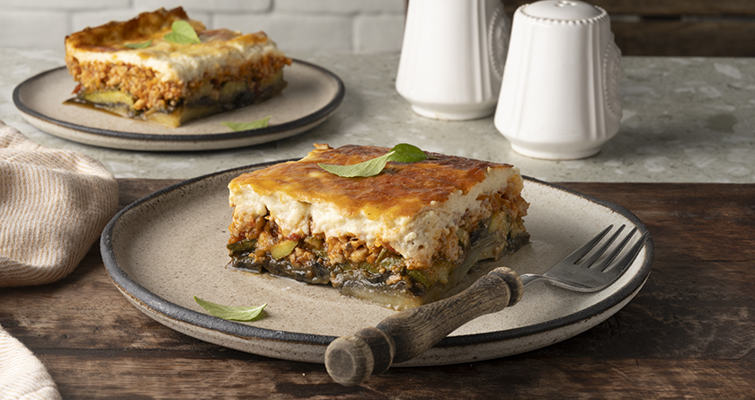

Home
Light moussakas with yogurt bechamel sauce

Description
Prepare the most delicious light moussaka, an alternative version of the traditional Greek dish with ground chicken and a velvety yogurt bechamel sauce!
Ingredients
For the vegetables
- 600 g potatoes, peeled
- 600 g zucchinis
- 600 g eggplants
- 4-6 tablespoon(s) olive oil
- salt
- pepper
For the ground chicken
- 1 kilo ground chicken
- 2 carrots
- 2 zucchinis
- 1 onion
- 1 clove(s) of garlic
- 2-3 tablespoon(s) olive oil
- 1 tablespoon(s) thyme, finely chopped
- ½ teaspoon(s) cumin
- ½ teaspoon(s) cinnamon
- 1 tablespoon(s) tomato paste
- 400 g canned tomatoes
- salt
- pepper
For the bechamel sauce
- 400 g strained yogurt
- 4 tablespoon(s) olive oil
- 4 tablespoon(s) all-purpose flour
- 600 g low-fat milk
- ¼ teaspoon(s) nutmeg, freshly grated
- 100 g light cheese, grated
- 2 egg yolks, from medium eggs
- salt
- pepper
Steps
For the vegetables
- Preheat the oven to 220°C (430°F) set to fan.
- Cut the potatoes lengthwise into 1 cm thick slices, and transfer them to a bowl.
- Add 2-3 tablespoons of olive oil, salt, and pepper, and mix them well with your hands.
- Transfer the potatoes to a 28x36 cm baking pan, put the pan in the oven, and bake the potatoes for 20 minutes.
- Cut the zucchini lengthwise into 1 cm thick slices, and transfer them to the same bowl.
- Add 1-1 ½ tablespoons of olive oil, salt, and pepper, and mix them well with your hands.
- Place a frying pan over high heat and let it heat up well.
- Transfer the zucchini to the pan, in 2-3 batches, and cook them for 3-4 minutes on both sides until nicely golden.
- Line a baking pan with paper towels, and then transfer the zucchini to the pan.
- Cut the eggplants lengthwise into 1 cm thick slices, and transfer them to the same bowl.
- Add the rest of the olive oil, salt, and pepper, and mix them with your hands.
- Transfer the eggplants to the frying pan in batches, and cook them in the same way as the zucchini until nicely golden.
- Remove the frying pan from the heat, transfer the eggplants to the pan with the zucchini, and set them aside.
For the ground chicken
- Grate the carrots and the zucchini using the large holes of a box grater.
- Finely chop the onion and cut the garlic into thin slices.
- Place a frying pan over high heat and let it heat up well.
- Add the onion and olive oil, sauté it for 1-2 minutes until caramelized, and then add the garlic.
- Wear gloves, add the ground chicken in large chunks, and sauté it without stirring for about 1 minute until it is browned on one side.
- Flip the ground chicken over and add the carrots, zucchini, thyme, cumin, cinnamon, tomato paste, canned tomatoes, salt, and pepper.
- Stir well, lower the heat to medium, and boil the sauce for 20-25 minutes until the ground chicken is cooked through and the sauce thickens.
- Remove the pan from the heat, stir the ground chicken with a serving spoon, and set it aside.
For the bechamel sauce
- Place a pot over medium heat, and add the olive oil and flour.
- Whisk them well until the flour is absorbed by the olive oil.
- Add the milk in batches, whisking constantly until the mixture comes to a boil and you have a thick bechamel sauce.
- Add the nutmeg, whisk well, and remove the pot from the heat.
- Add the grated cheese and whisk well.
- Add the yogurt and whisk again.
- Add the egg yolks, salt, and pepper, and whisk until smooth.
To assemble
- Preheat the oven to 180°C (350°F) set to fan.
- Spread the potatoes on the baking pan where you baked them, placing them side by side to cover the whole surface. (If needed, you can cut some of the potatoes in half to fill any gaps.)
- Arrange the zucchini over the potatoes and then the eggplants in the same way, creating 3 layers of vegetables in total.
- Add the ground chicken over the vegetables and spread it well.
- Pour the bechamel sauce on top and spread it evenly with a silicone spatula.
- Put the pan in the oven and bake the moussaka for 30-40 minutes until the bechamel sauce is nicely golden.
- Remove the pan from the oven and set it aside to cool for 30-60 minutes.
- Cut the moussaka into pieces and serve with basil leaves.